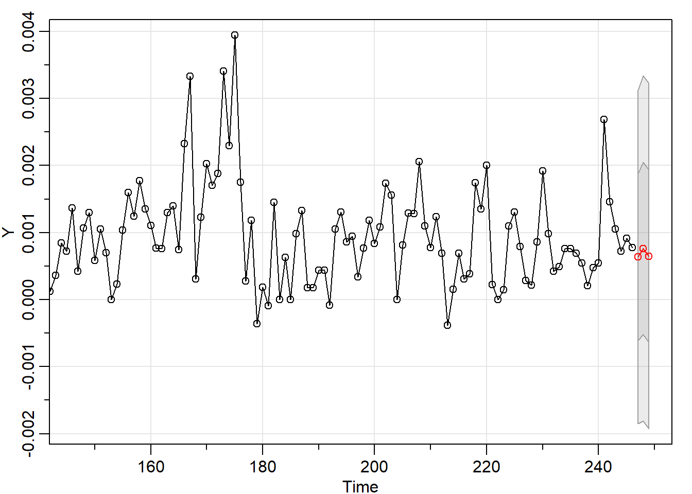
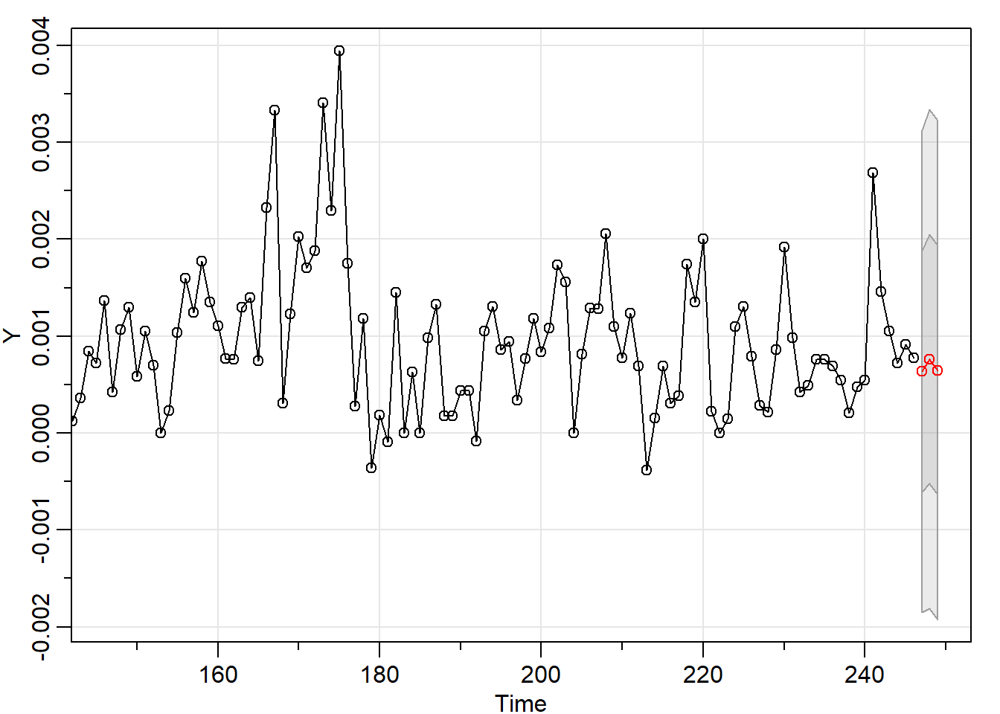
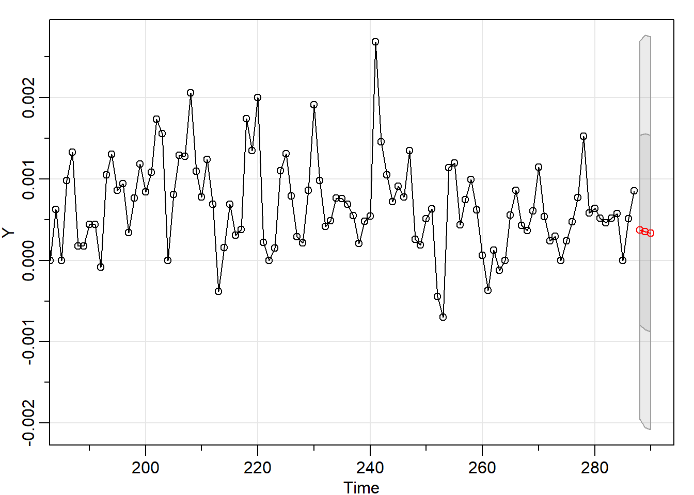
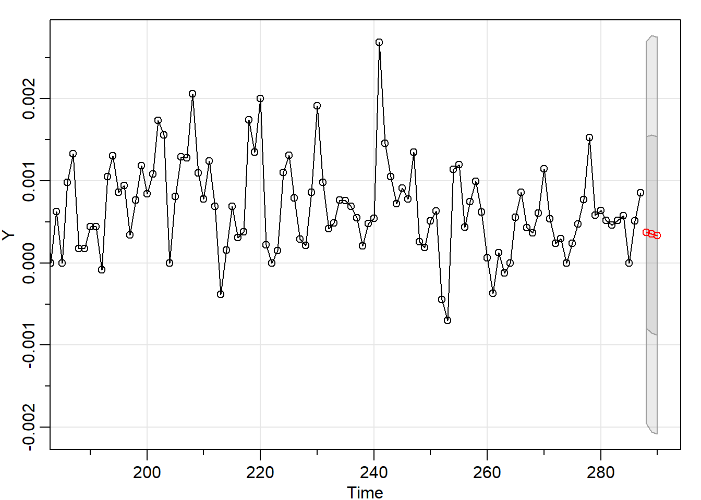
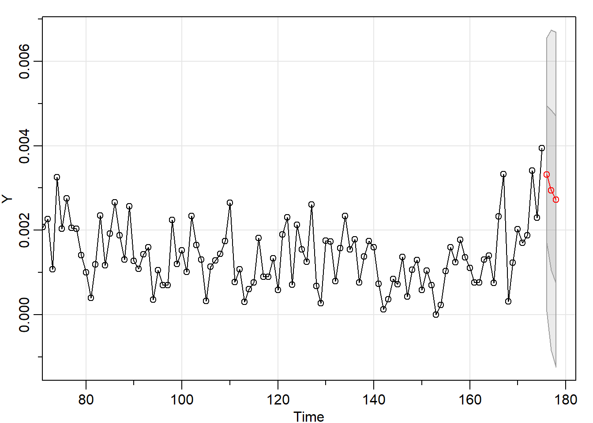
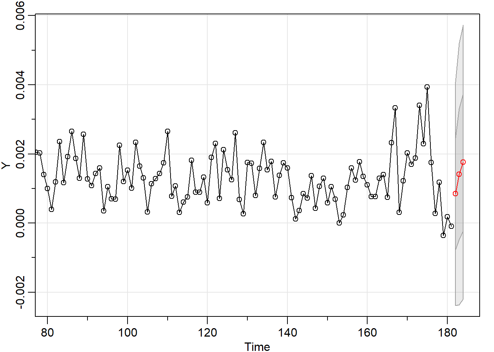
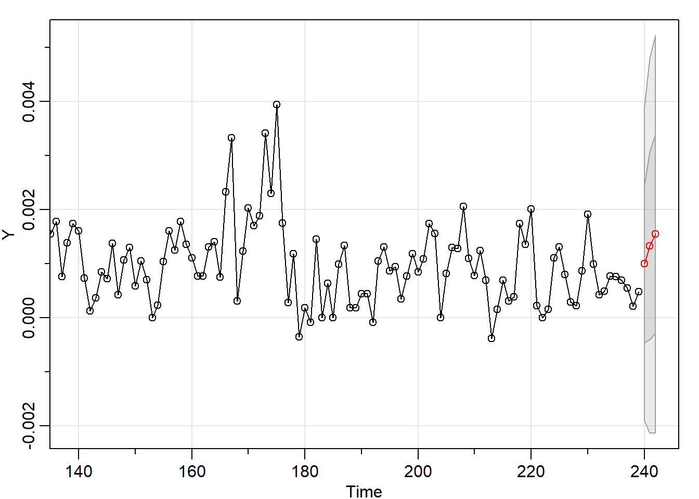
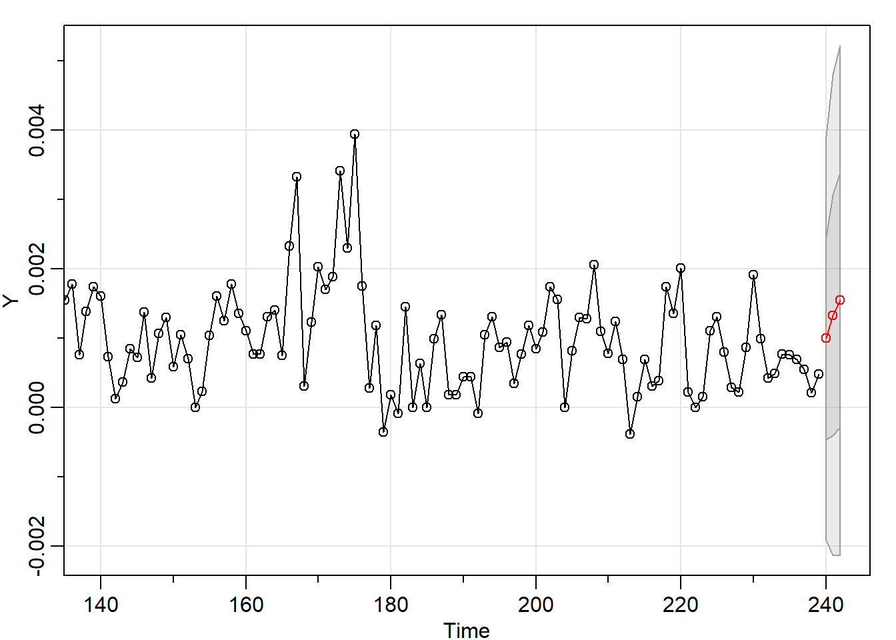

Capítulo 3 Ejercicio fuera de muestra
3.1 Aplicación sobre la inflación de Honduras
Los pronósticos de inflación a determinado horizonte h, realizados en el momento t a partir de una determinada especificación econométrica j (\(\hat{\pi}_{t+h\mid t}^{j}\)) son comparados con los datos efectivos (\(\pi_{t+h}\)), deduciendo los errores de pronósticos (\(E_{t+h}^{j}\)) en conformidad a la ecuación \tag{3.1} la cual aplica para cualquier tipo de ventana \(h\).
\[\begin{equation} ECM_{h}^{j}=\frac{\sum\limits_{n=0}^{N=g_{h}-1} (E_{t+h+n}^{j})^{2}}{g_{h}} \tag{3.1} \end{equation}\]
En el siguiente código, se seleccionará la mejor específicación según el criterio de información Akaike (AIC) para la inflación de Honduras tomando como muestra enero 1994 a diciembre 2006.
library("xts")
library("zoo")
library("astsa")
library("forecast")
library("ggplot2")
library("forecast")
library("ggfortify")
library("stargazer")
library("urca")
library("dynlm")
library("scales")
library("quantmod")
library("dplyr")
library("sandwich")
library("knitr")
library("dynlm")
library("stargazer")
MES<-as.xts(read.zoo("MES_HN.csv", index.column = 1, sep = ";", header=TRUE, format = "%d/%m/%Y"))
INFLA <-(log(MES$IPC)-stats::lag(log(MES$IPC), n=12))/stats::lag(log(MES$IPC), n=12)
INFLA1<-INFLA["1994-01-01/2006-12-01"]
INFLA_fit <-auto.arima(INFLA1, ic = c("aic"))
INFLA_fit## Series: INFLA1
## ARIMA(1,1,2) with drift
##
## Coefficients:
## ar1 ma1 ma2 drift
## -0.6503 -0.1120 -0.7132 0e+00
## s.e. 0.1504 0.1212 0.1035 1e-04
##
## sigma^2 estimated as 2.125e-06: log likelihood=793.57
## AIC=-1577.13 AICc=-1576.73 BIC=-1561.91La mejor específicación seleccionada es un a ARIMA(1,1,2). El que formalmente puede escribirse como:
\[\begin{equation} \Phi(L)(1-L)\pi_{t}=\Theta(L)\epsilon_{t} \tag{3.2} \end{equation}\]
Donde \(\Phi(L)=(1+0.65L),\) \(\Theta(L)=(1-0.11L-0.71L^{2})\).
Luego de tener esa específicación podemos comparar su desempeño predictivo con respecto a los datos observados que se encuentran fuera de la muestra de estimación.
Para ejemplificar se selecciona como horizonte predictivo 3 meses.
FECHA <-index(MES)
t_inicial <-first(FECHA,'1 month')
index_final <-last(index(FECHA))
fecha_contador <-seq(as.Date(t_inicial), length =index_final, by = "months")
counter <-c(1:index_final)
contador <-xts(x=counter, order.by = fecha_contador)
inicio_estimacion<-coredata(contador["1994-01-01"])[1]
final_estimacion <-coredata(contador["2006-12-01"])[1]
final_muestra <-coredata(contador["2019-02-01"])[1]
H <-3 #Horizonte predictivo
DENTRO <- seq(as.Date(FECHA[inicio_estimacion]),
length =final_estimacion+H-inicio_estimacion, by = "months")
FUERA <- seq(as.Date(FECHA[final_estimacion+1]),
length =final_muestra-H-final_estimacion, by = "months")
assign(paste('PI_', H, sep=''), xts(x=window(INFLA, start=FECHA[inicio_estimacion], end=FECHA[final_estimacion+H-1]),
order.by = DENTRO))
Y <-window(INFLA, start=FECHA[inicio_estimacion], end=FECHA[final_estimacion])
for(i in 1:length(FUERA)){
Y_F<-sarima.for(Y,H,1,1,2, xreg=NULL,
newxreg=NULL, plot= FALSE)
dates_out<-as.Date(FECHA[final_estimacion+i+H-1])
Y_F_P<-xts(x=Y_F$pred[H], order.by = dates_out)
DENTRO<-seq(as.Date(FECHA[inicio_estimacion]),
length =final_estimacion+1+i-inicio_estimacion, by = "months")
Y <-window(INFLA, start=FECHA[inicio_estimacion], end=FECHA[final_estimacion+i])
assign(paste('PI_', H, sep=''),rbind(get(paste('PI_', H, sep='')),
Y_F_P))
}


 
 

compara<-merge(INFLA,get(paste('PI_', H, sep='')),join='inner')
compara<-data.frame(date=index(compara), coredata(compara))
compara$date<-as.Date(compara$date)
compara<-filter(compara, date>="2007-03-01" & date<="2019-02-01")
compara<-mutate(compara, DIFF =(IPC-IPC.1)^2)
ECM_1<-mean(compara$DIFF)
ECM_1## [1] 5.891045e-07Luego de tener esa específicación podemos comparar su desempeño predictivo con respecto a otra específicación. De acuerdo a la literura un benchmark natural es un simple random walk (ver Atkeson and Ohanian (2001) y Meese and Rogoff (1983) entre otros).
En efecto, con un modelo random walk podemos calcular para el mismo horizonte de pronóstico (3) su ECM y compararlo con el obtenido por el modelo ARIMA(1,1,2).
DENTRO<- seq(as.Date(FECHA[inicio_estimacion]),
length =final_estimacion+H-inicio_estimacion, by = "months")
assign(paste('PI_', H, sep=''), xts(x=window(INFLA, start=FECHA[inicio_estimacion], end=FECHA[final_estimacion+H-1]),
order.by = DENTRO))
Y <-window(INFLA, start=FECHA[inicio_estimacion], end=FECHA[final_estimacion])
for(i in 1:length(FUERA)){
Y_F<-sarima.for(Y,H,1,0,0, xreg=NULL,
newxreg=NULL, plot= FALSE)
dates_out<-as.Date(FECHA[final_estimacion+i+H-1])
Y_F_P<-xts(x=Y_F$pred[H], order.by = dates_out)
DENTRO<-seq(as.Date(FECHA[inicio_estimacion]),
length =final_estimacion+1+i-inicio_estimacion, by = "months")
Y <-window(INFLA, start=FECHA[inicio_estimacion], end=FECHA[final_estimacion+i])
assign(paste('PI_', H, sep=''),rbind(get(paste('PI_', H, sep='')),
Y_F_P))
}


 



compara2<-merge(INFLA,get(paste('PI_', H, sep='')),join='inner')
compara2<-data.frame(date=index(compara2), coredata(compara2))
compara2$date<-as.Date(compara2$date)
compara2<-filter(compara2, date>="2007-03-01" & date<="2019-02-01")
compara2<-mutate(compara2, DIFF = (IPC-IPC.1)^2)
ECM_2<-mean(compara2$DIFF)
ECM_2## [1] 1.314962e-06Una forma muy usual para comparar dos específicaciones es definir un ratio entre cada uno de los ECM, sí este es mayor a 1 la específicación del que resulta el ECM del denominador sería la mejor.
ECM_1/ECM_2## [1] 0.4480013Sin embargo, un criterio formal para la deducción de referentes predictivos, consiste en conocer sí las diferencias en el ECM entre distintas especificaciones econométricas son significativas desde la perspectiva estadística, ello se realiza a través del test propuesto por Giacomini and White (2006).
La estructura de este test consiste en definir la hipótesis nula que la diferencia en la métrica ECM de una especificación respecto a otra es cero. Luego se construye el estadístico que se denomina Giacomini y White (GW) de acuerdo a la ecuación \tag{3.3}, el cuál se distribuye asintóticamente normal y se utiliza para contrastar la hipótesis nula.
\[\begin{equation} GW_{h}^{i,j}= \left\{ \begin{array}{lcll} \frac{\bar{\Delta L}^{i,j}_{h}}{\hat{\sigma}^{i,j}_{g_{h}}} & \mbox{si} & h=1 & \\ & & & \forall\;i\neq j \\ \frac{\bar{\Delta L}^{i,j}_{h}}{\frac{\hat{\sigma}^{i,j}_{g_h}}{\sqrt{g_{h}}}} & \mbox{ si } & h = \{3,6,9,12\} & \end{array} \right. \tag{3.3} \end{equation}\]
La aplicación en R sería de la forma siguiente:
GW_H<-cbind(compara$date, compara$DIFF, compara2$DIFF)
GW_H<-data.frame(GW_H)
colnames(GW_H)<-c("date", "ARIMA","RW")
GW_H$date<-as.Date(GW_H$date)
GW_H<-mutate(GW_H, delta=ARIMA-RW)
GW_ts<-xts(GW_H[, -1], order.by=as.Date(GW_H$date))
GW_MODEL <- lm(delta ~ 1, data=GW_ts)
list(sqrt(diag(sandwich(GW_MODEL))))## [[1]]
## (Intercept)
## 1.295287e-07